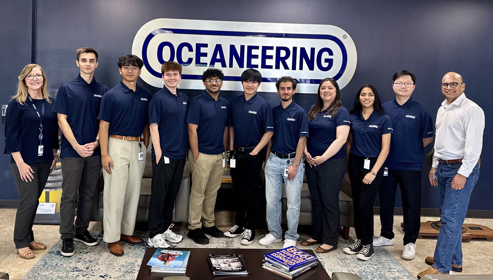

MAY 2025 - AUGUST 2025
Business Analyst Intern - IT Financial Solutions
IT Support & Troubleshooting
- Provided first-level IT support for Finance, IT, and Supply Chain users through ManageEngine ServiceDesk.
- Troubleshot application access, system, and data-related issues affecting enterprise financial platforms.
IT Operations
- Followed ITSM escalation procedures and collaborated with senior IT staff and system owners to resolve complex incidents.
- Documented incidents, root causes, and resolutions to improve knowledge accuracy and consistent issue resolution.
INTERNSHIP PRESENTATION
See My Internship Experience in More Detail
Explore highlights from my final Oceaneering internship presentation, including the tools I used, projects I worked on, accomplishments, and key takeaways from the experience.
INTERNSHIP HIGHLIGHTS
Oceaneering Internship Presentation
About This Presentation
This presentation was created as the final presentation for my Summer 2025 internship with Oceaneering's IT Financial Solutions team.
I completed the internship alongside a fellow intern, Kevin Yao, so portions of the presentation highlight our shared internship experience as well as our individual work.
The highlights shown below focus on the skills, accomplishments, responsibilities, and takeaways most relevant to my experience and contributions.